Принципиальные электрические схемы генераторов
импульсов на транзисторах и интегральных микросхемах
Генераторы импульсов на транзисторах
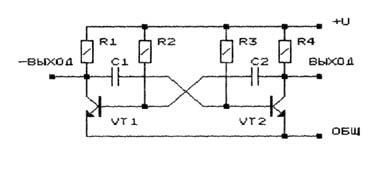
Релаксационный генератор - симметричный мультивибратор на двух транзисторах [6]. Напряжение питания +U зависит от решаемой задачи и может составлять единицы - десятки вольт. Изменить полярность питающего напряжения можно, применяя транзисторы p-n-p. При R2 = R3 = R, C1 = C2 = C период следования импульсов на контактах "Выход" и "-Выход" равен 1.4 R C, а скважность (отношение длительности импульса к периоду следования импульсов) близка к 0.5 (длительность импульса равна длительности паузы). Сопротивление резисторов R1, R4 определяет нагрузочную способность генератора и может изменяться в широких пределах (десятки ом - десятки килоом). Сигналы на выходах "Выход" и "-Выход" находятся практически в противофазе. Скважность импульсов можно изменять, меняя соотношение R2 : R3 или C1 : C2.
Генераторы импульсов на ТТЛ-микросхемах (серии 133, 155, 531, 533, 555, 1531, 1533)
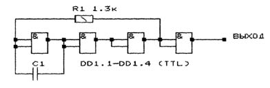
Генератор импульсов на трех элементах И-НЕ (четвертый элемент И-НЕ служит буфером, его можно не ставить), например, К155ЛА3. Вместо элементов И-НЕ могут быть использованы элементы ИЛИ-НЕ или инверторы. Частота следования импульсов при емкости конденсатора C1 = 0.047 мкФ составляет примерно 10 кГц. Может применяться в качестве задающего генератора.
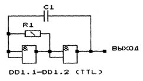
Генератор импульсов на двух элементах И-НЕ, например, К155ЛА3. Вместо элементов И-НЕ могут быть использованы элементы ИЛИ-НЕ или инверторы. Для получения устойчивой генерации сопротивление резистора R1 должно быть меньше 470 Ом. Частота следования импульсов при R1 = 300 Ом, C1 = 0.1 мкФ составляет примерно 10 кГц. Может применяться в качестве задающего генератора.
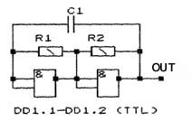 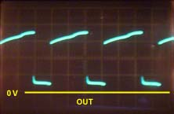
Генератор импульсов на двух элементах И-НЕ, например, К155ЛА3. Вместо элементов И-НЕ могут быть использованы элементы ИЛИ-НЕ или инверторы. Для получения устойчивой генерации сопротивление резисторов R1, R2 может быть примерно по 470 Ом. Частота следования импульсов при R1 = R2 = 470 Ом и C1 = 0.1 мкФ составляет примерно 6 кГц. Может применяться в качестве задающего генератора. Отсоединив один из входов элемента DD1 от другого, можно с его помощью управлять генерацией ("пуск-останов").
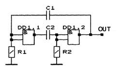 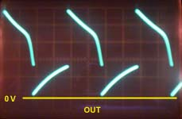
Генератор импульсов - симметричный мультивибратор на двух элементах И-НЕ, например, К155ЛА3. Вместо элементов И-НЕ могут быть использованы элементы ИЛИ-НЕ или инверторы. Частота следования импульсов при R1 = R2 = 4.7 кОм и C1 = C2 = 0.1 мкФ составляет примерно 2.5 кГц. Для улучшения формы выходных импульсов могут использоваться буферные элементы.
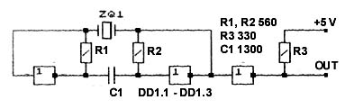
Генератор импульсов на трех инверторах (например, К155ЛН1) с кварцевой стабилизацией частоты. Частота кварцевого резонатора ZQ1 - единицы мегагерц. Может применяться в качестве задающего генератора импульсов для микроконтроллеров и других устройств, когда требуется высокая стабильность частоты.
Генераторы импульсов на КМОП-микросхемах (серии 176, 561, 1554, 1561)
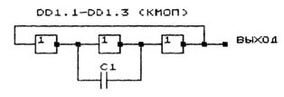
Генератор импульсов на трех инверторах с минимальным количеством навесных элементов (один конденсатор). Частота следования импульсов на контакте "Выход" при емкости конденсатора C1 = 0.1 мкФ составляет несколько килогерц. Может применяться в качестве задающего генератора в устройствах, не предъявляющих высоких требований к стабильности частоты. Вместо инверторов могут быть использованы элементы И-НЕ, ИЛИ-НЕ с объединенными входами.
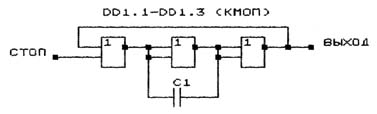
Генератор импульсов на трех элементах ИЛИ-НЕ (например, К561ЛЕ5) с минимальным количеством навесных элементов (один конденсатор) и функцией "пуск - останов". Частота следования импульсов на контакте "Выход" при емкости конденсатора C1= 0.1 мкФ составляет несколько килогерц. Когда уровень напряжения на входе "Стоп" равен единице, генерация импульсов прекращается. Может применяться в качестве задающего генератора в устройствах, не предъявляющих высоких требований к стабильности частоты. По аналогичной схеме может быть построен генератор на элементах И-НЕ. Тогда прекращение генерации будет происходить при нулевом уровне напряжения на входе 'Стоп".
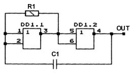
Генератор импульсов на двух элементах ИЛИ-НЕ, например К561ЛЕ5 (или двух элементах И-НЕ, или двух инверторах). Частоту следования импульсов можно изменять, изменяя емкость конденсатора C1. При R1 = 36 кОм, C1 = 180 пФ частота следования импульсов на выходе "OUT" приблизительно равна 100 кГц. Один из входов микросхемы DD1 можно отсоединить от другого и подавать на него сигнал управления генерацией ("пуск-останов").
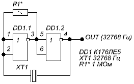
Генератор импульсов на двух элементах ИЛИ-НЕ (например, К176ЛЕ5) с кварцевой стабилизацией частоты. В качестве кварца может быть использован часовой кварц на частоту 32768 Гц. Вместо элементов ИЛИ-НЕ могут быть применены элементы И-НЕ или инверторы. Величина резистора R1 подбирается для обеспечения стабильной работы генератора на заданной частоте. Может применяться в качестве задающего генератора для устройств, в которых требуется высокая стабильность рабочей частоты.
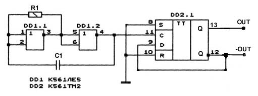 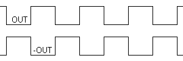
Генератор импульсов со скважностью 0.5 (длительность импульса равна длительности паузы). При R1 = 36 кОм, C1 = 180 пФ частота следования импульсов на выходах "OUT" и "-OUT" приблизительно равна 50 кГц. Сигналы на выходах "OUT" и "-OUT" находятся в противофазе.
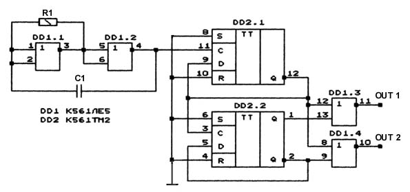 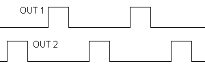
Генератор двух противофазных последовательностей импульсов с паузой [3]. Пауза равна длительности импульса. Может использоваться в качестве задающего генератора для импульсных полумостовых преобразователей напряжения. Частота следования импульсов на выходах "OUT 1" и "OUT 2" приблизительно равна 25 кГц при R1 = 36 кОм, C1 = 180 пФ.
Генераторы импульсов на интегральном таймере 555 (КР1006ВИ1)
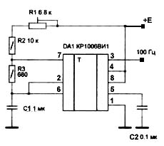
Генератор импульсов частотой 100 Гц на интегральном таймере КР1006ВИ1 (DA1). R1 = 6.8 кОм, R2 = 10 кОм, R3 = 680 Ом, C1 = 1 мкФ, C2 = 0.1 мкФ. Переменный резистор R1 служит для точной подстройки частоты импульсов. Напряжение питания (+E) до +15 В. Может применяться в качестве задающего генератора для преобразователей напряжения систем аварийного электропитания.
Ссылки:
17.11.2006
22.11.2006
12.01.2007
23.12.2020
Альтернативные источники
энергии
Компьютеры и
Интернет
Магнитные поля
Механотронные системы
Перспективные
разработки
Электроника и технология